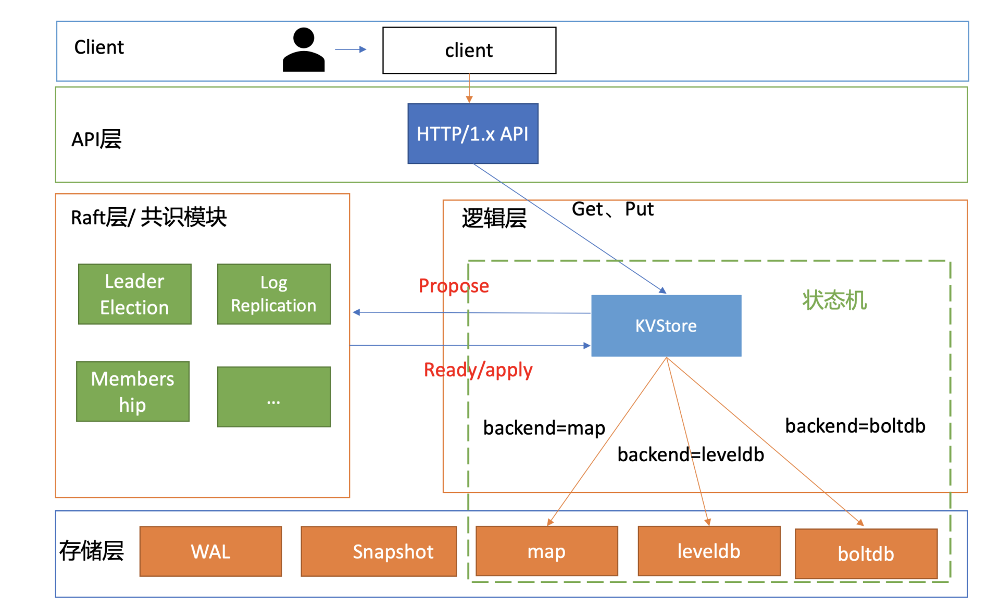

- 00 开篇词 为什么你要学习etcd_.md.html
- 01 etcd的前世今生：为什么Kubernetes使用etcd？.md.html
- 02 基础架构：etcd一个读请求是如何执行的？.md.html
- 03 基础架构：etcd一个写请求是如何执行的？.md.html
- 04 Raft协议：etcd如何实现高可用、数据强一致的？.md.html
- 05 鉴权：如何保护你的数据安全？.md.html
- 06 租约：如何检测你的客户端存活？.md.html
- 07 MVCC：如何实现多版本并发控制？.md.html
- 08 Watch：如何高效获取数据变化通知？.md.html
- 09 事务：如何安全地实现多key操作？.md.html
- 10 boltdb：如何持久化存储你的key-value数据？.md.html
- 11 压缩：如何回收旧版本数据？.md.html
- 12 一致性：为什么基于Raft实现的etcd还会出现数据不一致？.md.html
- 13 db大小：为什么etcd社区建议db大小不超过8G？.md.html
- 14 延时：为什么你的etcd请求会出现超时？.md.html
- 15 内存：为什么你的etcd内存占用那么高？.md.html
- 16 性能及稳定性（上）：如何优化及扩展etcd性能？.md.html
- 17 性能及稳定性（下）：如何优化及扩展etcd性能_.md.html
- 18 实战：如何基于Raft从0到1构建一个支持多存储引擎分布式KV服务？.md.html
- 19 Kubernetes基础应用：创建一个Pod背后etcd发生了什么？.md.html
- 20 Kubernetes高级应用：如何优化业务场景使etcd能支撑上万节点集群？.md.html
- 21 分布式锁：为什么基于etcd实现分布式锁比Redis锁更安全？.md.html
- 22 配置及服务发现：解析etcd在API Gateway开源项目中应用.md.html
- 23 选型：etcd_ZooKeeper_Consul等我们该如何选择？.md.html
- 24 运维：如何构建高可靠的etcd集群运维体系？.md.html
- 特别放送 成员变更：为什么集群看起来正常，移除节点却会失败呢？.md.html
- 结束语 搞懂etcd，掌握通往分布式存储系统之门的钥匙.md.html
- 捐赠
18 实战：如何基于Raft从0到1构建一个支持多存储引擎分布式KV服务？
你好，我是唐聪。
通过前面课程的学习，我相信你已经对etcd基本架构、核心特性有了一定理解。如果让你基于Raft协议，实现一个简易的类etcd、支持多存储引擎的分布式KV服务，并能满足读多写少、读少写多的不同业务场景诉求，你知道该怎么动手吗？
纸上得来终觉浅，绝知此事要躬行。
今天我就和你聊聊如何实现一个类etcd、支持多存储引擎的KV服务，我们将基于etcd自带的raftexample项目快速构建它。
为了方便后面描述，我把它命名为metcd（表示微型的etcd），它是raftexample的加强版。希望通过metcd这个小小的实战项目，能够帮助你进一步理解etcd乃至分布式存储服务的核心架构、原理、典型问题解决方案。
同时在这个过程中，我将详细为你介绍etcd的Raft算法工程实现库、不同类型存储引擎的优缺点，拓宽你的知识视野，为你独立分析etcd源码，夯实基础。
整体架构设计
在和你深入聊代码细节之前，首先我和你从整体上介绍下系统架构。
下面是我给你画的metcd整体架构设计，它由API层、Raft层的共识模块、逻辑层及存储层组成的状态机组成。
接下来，我分别和你简要分析下API设计及复制状态机。

API设计
API是软件系统对外的语言，它是应用编程接口的缩写，由一组接口定义和协议组成。
在设计API的时候，我们往往会考虑以下几个因素：
- 性能。如etcd v2使用的是简单的HTTP/1.x，性能上无法满足大规模Kubernetes集群等场景的诉求，因此etcd v3使用的是基于HTTP/2的gRPC协议。
- 易用性、可调试性。如有的内部高并发服务为了满足性能等诉求，使用的是UDP协议。相比HTTP协议，UDP协议显然在易用性、可调试性上存在一定的差距。
- 开发效率、跨平台、可移植性。相比基于裸UDP、TCP协议设计的接口，如果你使用Protobuf等IDL语言，它支持跨平台、代码自动自动生成，开发效率更高。
- 安全性。如相比HTTP协议，使用HTTPS协议可对通信数据加密更安全，可适用于不安全的网络环境（比如公网传输）。
- 接口幂等性。幂等性简单来说，就是同样一个接口请求一次与多次的效果一样。若你的接口对外保证幂等性，则可降低使用者的复杂度。
因为我们场景的是POC(Proof of concept)、Demo开发，因此在metcd项目中，我们优先考虑点是易用性、可调试性，选择HTTP/1.x协议，接口上为了满足key-value操作，支持Get和Put接口即可。
假设metcd项目使用3379端口，Put和Get接口，如下所示。
- Put接口，设置key-value
curl -L http://127.0.0.1:3379/hello -XPUT -d world
- Get接口，查询key-value
curl -L http://127.0.0.1:3379/hello
world
复制状态机
了解完API设计，那最核心的复制状态机是如何工作的呢？
我们知道etcd是基于下图复制状态机实现的分布式KV服务，复制状态机由共识模块、日志模块、状态机组成。

我们的实战项目metcd，也正是使用与之一样的模型，并且使用etcd项目中实现的Raft算法库作为共识模块，此算法库已被广泛应用在etcd、cockroachdb、dgraph等开源项目中。
以下是复制状态机的写请求流程：
- client发起一个写请求（put hello = world）；
- server向Raft共识模块提交请求，共识模块生成一个写提案日志条目。若server是Leader，则把日志条目广播给其他节点，并持久化日志条目到WAL中；
- 当一半以上节点持久化日志条目后，Leader的共识模块将此日志条目标记为已提交（committed），并通知其他节点提交；
- server从共识模块获取已经提交的日志条目，异步应用到状态机存储中（boltdb/leveldb/memory），然后返回给client。
多存储引擎
了解完复制状态机模型后，我和你再深入介绍下状态机。状态机中最核心模块当然是存储引擎，那要如何同时支持多种存储引擎呢？
metcd项目将基于etcd本身自带的raftexample项目进行快速开发，而raftexample本身只支持内存存储。
因此我们通过将KV存储接口进行抽象化设计，实现支持多存储引擎。KVStore interface的定义如下所示。
type KVStore interface {
// LookUp get key value
Lookup(key string) (string, bool)
// Propose propose kv request into raft state machine
Propose(k, v string)
// ReadCommits consume entry from raft state machine into KvStore map until error
ReadCommits(commitC <-chan *string, errorC <-chan error)
// Snapshot return KvStore snapshot
Snapshot() ([]byte, error)
// RecoverFromSnapshot recover data from snapshot
RecoverFromSnapshot(snapshot []byte) error
// Close close backend databases
Close() err
}
基于KV接口抽象化的设计，我们只需要针对具体的存储引擎，实现对应的操作即可。
我们期望支持三种存储引擎，分别是内存map、boltdb、leveldb，并做一系列简化设计。一组metcd实例，通过metcd启动时的配置来决定使用哪种存储引擎。不同业务场景不同实例，比如读多写少的存储引擎可使用boltdb，写多读少的可使用leveldb。
接下来我和你重点介绍下存储引擎的选型及原理。
boltdb
boltdb是一个基于B+ tree实现的存储引擎库，在10中我已和你详细介绍过原理。
boltdb为什么适合读多写少？
对于读请求而言，一般情况下它可直接从内存中基于B+ tree遍历，快速获取数据返回给client，不涉及经过磁盘I/O。
对于写请求，它基于B+ tree查找写入位置，更新key-value。事务提交时，写请求包括B+ tree重平衡、分裂、持久化ditry page、持久化freelist、持久化meta page流程。同时，ditry page可能分布在文件的各个位置，它发起的是随机写磁盘I/O。
因此在boltdb中，完成一个写请求的开销相比读请求是大很多的。正如我在16和17中给你介绍的一样，一个3节点的8核16G空集群，线性读性能可以达到19万QPS，而写QPS仅为5万。
leveldb
那要如何设计适合写多读少的存储引擎呢?
最简单的思路当然是写内存最快。可是内存有限的，无法支撑大容量的数据存储，不持久化数据会丢失。
那能否直接将数据顺序追加到文件末尾（AOF）呢？因为磁盘的特点是顺序写性能比较快。
当然可以。Bitcask存储模型就是采用AOF模式，把写请求顺序追加到文件。Facebook的图片存储Haystack根据其论文介绍，也是使用类似的方案来解决大规模写入痛点。
那在AOF写入模型中如何实现查询数据呢？
很显然通过遍历文件一个个匹配key是可以的，但是它的性能是极差的。为了实现高性能的查询，最理想的解决方案从直接从内存中查询，但是内存是有限的，那么我们能否通过内存索引来记录一个key-value数据在文件中的偏移量，实现从磁盘快速读取呢？
是的，这正是Bitcask存储模型的查询的实现，它通过内存哈希表维护各个key-value数据的索引，实现了快速查找key-value数据。不过，内存中虽然只保存key索引信息，但是当key较多的时候，其对内存要求依然比较高。
快速了解完存储引擎提升写性能的核心思路（随机写转化为顺序写）之后，那leveldb它的原理是怎样的呢？与Bitcask存储模型有什么不一样？
leveldb是基于LSM tree(log-structured merge-tree)实现的key-value存储，它的架构如下图所示（引用自微软博客）。
它提升写性能的核心思路同样是将随机写转化为顺序写磁盘WAL文件和内存，结合了我们上面讨论的写内存和磁盘两种方法。数据持久化到WAL文件是为了确保机器crash后数据不丢失。
那么它要如何解决内存不足和查询的痛点问题呢？
核心解决方案是分层的设计和基于一系列对象的转换和压缩。接下来我给你分析一下上面架构图写流程和后台compaction任务：
- 首先写请求顺序写入Log文件(WAL)；
- 更新内存的Memtable。leveldb Memtable后端数据结构实现是skiplist，skiplist相比平衡二叉树，实现简单却同样拥有高性能的读写；
- 当Memtable达到一定的阈值时，转换成不可变的Memtable，也就是只读不可写；
- leveldb后台Compact任务会将不可变的Memtable生成SSTable文件，它有序地存储一系列key-value数据。注意SST文件按写入时间进行了分层，Level层次越小数据越新。Manifest文件记录了各个SSTable文件处于哪个层级、它的最小与最大key范围；
- 当某个level下的SSTable文件数目超过一定阈值后，Compact任务会从这个level的SSTable中选择一个文件（level>0），将其和高一层级的level+1的SSTable文件合并；
- 注意level 0是由Immutable直接生成的，因此level 0 SSTable文件中的key-value存在相互重叠。而level > 0时，在和更高一层SSTable合并过程中，参与的SSTable文件是多个，leveldb会确保各个SSTable中的key-value不重叠。
了解完写流程，读流程也就简单了，核心步骤如下：
- 从Memtable跳跃表中查询key；
- 未找到则从Immutable中查找；
- Immutable仍未命中，则按照leveldb的分层属性，因level 0 SSTable文件是直接从Immutable生成的，level 0存在特殊性，因此你需要从level 0遍历SSTable查找key；
- level 0中若未命中，则从level 1乃至更高的层次查找。level大于0时，各个SSTable中的key是不存在相互重叠的。根据manifest记录的key-value范围信息，可快递定位到具体的SSTable。同时leveldb基于bloom filter实现了快速筛选SSTable，因此查询效率较高。
更详细原理你可以参考一下leveldb源码。
实现分析
从API设计、复制状态机、多存储引擎支持等几个方面你介绍了metcd架构设计后，接下来我就和你重点介绍下共识模块、状态机支持多存储引擎模块的核心实现要点。
Raft算法库
共识模块使用的是etcd Raft算法库，它是一个经过大量业务生产环境检验、具备良好可扩展性的共识算法库。
它提供了哪些接口给你使用? 如何提交一个提案，并且获取Raft共识模块输出结果呢？
Raft API
Raft作为一个库，它对外最核心的对象是一个名为Node的数据结构。Node表示Raft集群中的一个节点，它的输入与输出接口如下图所示，下面我重点和你介绍它的几个接口功能：
- Campaign，状态转换成Candidate，发起新一轮Leader选举；
- Propose，提交提案接口；
- Ready，Raft状态机输出接口，它的返回是一个输出Ready数据结构类型的管道，应用需要监听此管道，获取Ready数据，处理其中的各个消息（如持久化未提交的日志条目到WAL中，发送消息给其他节点等）；
- Advance，通知Raft状态机，应用已处理上一个输出的Ready数据，等待发送下一个Ready数据；
- TransferLeaderShip，尝试将Leader转移到某个节点；
- Step，向Raft状态机提交收到的消息，比如当Leader广播完MsgApp消息给Follower节点后，Leader收到Follower节点回复的MsgAppResp消息时，就通过Step接口将此消息提交给Raft状态机驱动其工作；
- ReadIndex，用于实现线性读。
上面提到的Raft状态机的输出Ready结构含有哪些信息呢? 下图是其详细字段，含义如下：
- SoftState，软状态。包括集群Leader和节点状态，不需要持久化到WAL；
- pb.HardState，硬状态。与软状态相反，包括了节点当前Term、Vote等信息，需要持久化到WAL中；
- ReadStates，用于线性一致性读；
- Entries，在向其他节点发送消息之前需持久化到WAL中；
- Messages，持久化Entries后，发送给其他节点的消息；
- Committed Entries，已提交的日志条目，需要应用到存储状态机中；
- Snapshot，快照需保存到持久化存储中；
- MustSync，HardState和Entries是否要持久化到WAL中；

了解完API后，我们接下来继续看看代码如何使用Raft的Node API。
正如我在04中和你介绍的，etcd Raft库的设计抽象了网络、Raft日志存储等模块，它本身并不会进行网络、存储相关的操作，上层应用需结合自己业务场景选择内置的模块或自定义实现网络、存储、日志等模块。
因此我们在使用Raft库时，需要先自定义好相关网络、存储等模块，再结合上面介绍的Raft Node API，就可以完成一个Node的核心操作了。其数据结构定义如下：
// A key-value stream backed by raft
type raftNode struct {
proposeC <-chan string // proposed messages (k,v)
confChangeC <-chan raftpb.ConfChange // proposed cluster config changes
commitC chan<- *string // entries committed to log (k,v)
errorC chan<- error // errors from raft session
id int // client ID for raft session
......
node raft.Node
raftStorage *raft.MemoryStorage
wal *wal.WAL
transport *rafthttp.Transport
}
这个数据结构名字叫raftNode，它表示Raft集群中的一个节点。它是由我们业务应用层设计的一个组合结构。从结构体定义中你可以看到它包含了Raft核心数据结构Node(raft.Node)、Raft日志条目内存存储模块(raft.MemoryStorage）、WAL持久化模块(wal.WAL)以及网络模块(rafthttp.Transport)。
同时，它提供了三个核心的管道与业务逻辑模块、存储状态机交互：
- proposeC，它用来接收client发送的写请求提案消息；
- confChangeC，它用来接收集群配置变化消息；
- commitC，它用来输出Raft共识模块已提交的日志条目消息。
在metcd项目中因为我们是直接基于raftexample定制开发，因此日志持久化存储、网络都使用的是etcd自带的WAL和rafthttp模块。
WAL模块中提供了核心的保存未持久化的日志条目和快照功能接口，你可以参考03节写请求中我和你介绍的原理。
rafthttp模块基于HTTP协议提供了各个节点间的消息发送能力，metcd使用如下：
rc.transport = &rafthttp.Transport{
Logger: zap.NewExample(),
ID: types.ID(rc.id),
ClusterID: 0x1000,
Raft: rc,
ServerStats: stats.NewServerStats("", ""),
LeaderStats: stats.NewLeaderStats(strconv.Itoa(rc.id)),
ErrorC: make(chan error),
}
搞清楚Raft模块的输入、输出API，设计好raftNode结构，复用etcd的WAL、网络等模块后，接下来我们就只需要实现如下两个循环逻辑，处理业务层发送给proposeC和confChangeC消息、将Raft的Node输出Ready结构进行相对应的处理即可。精简后的代码如下所示：
func (rc *raftNode) serveChannels() {
// send proposals over raft
go func() {
confChangeCount := uint64(0)
for rc.proposeC != nil && rc.confChangeC != nil {
select {
case prop, ok := <-rc.proposeC:
if !ok {
rc.proposeC = nil
} else {
// blocks until accepted by raft state machine
rc.node.Propose(context.TODO(), []byte(prop))
}
case cc, ok := <-rc.confChangeC:
if !ok {
rc.confChangeC = nil
} else {
confChangeCount++
cc.ID = confChangeCount
rc.node.ProposeConfChange(context.TODO(), cc)
}
}
}
}()
// event loop on raft state machine updates
for {
select {
case <-ticker.C:
rc.node.Tick()
// store raft entries to wal, then publish over commit channel
case rd := <-rc.node.Ready():
rc.wal.Save(rd.HardState, rd.Entries)
if !raft.IsEmptySnap(rd.Snapshot) {
rc.saveSnap(rd.Snapshot)
rc.raftStorage.ApplySnapshot(rd.Snapshot)
rc.publishSnapshot(rd.Snapshot)
}
rc.raftStorage.Append(rd.Entries)
rc.transport.Send(rd.Messages)
if ok := rc.publishEntries(rc.entriesToApply(rd.CommittedEntries)); !ok {
rc.stop()
return
}
rc.maybeTriggerSnapshot()
rc.node.Advance()
}
}
}
代码简要分析如下：
- 从proposeC中取出提案消息，通过raft.Node.Propose API提交提案；
- 从confChangeC取出配置变更消息，通过raft.Node.ProposeConfChange API提交配置变化消息；
- 从raft.Node中获取Raft算法状态机输出到Ready结构中，将rd.Entries和rd.HardState通过WAL模块持久化，将rd.Messages通过rafthttp模块，发送给其他节点。将rd.CommittedEntries应用到业务存储状态机。
以上就是Raft实现的核心流程，接下来我来和你聊聊业务存储状态机。
支持多存储引擎
在整体架构设计时，我和你介绍了为了使metcd项目能支撑多存储引擎，我们将KVStore进行了抽象化设计，因此我们只需要实现各个存储引擎相对应的API即可。
这里我以Put接口为案例，分别给你介绍下各个存储引擎的实现。
boltdb
首先是boltdb存储引擎，它的实现如下，你也可以去10里回顾一下它的API和原理。
func (s *boltdbKVStore) Put(key, value string) error {
s.mu.Lock()
defer s.mu.Unlock()
// Start a writable transaction.
tx, err := s.db.Begin(true)
if err != nil {
return err
}
defer tx.Rollback()
// Use the transaction...
bucket, err := tx.CreateBucketIfNotExists([]byte("keys"))
if err != nil {
log.Printf("failed to put key %s, value %s, err is %v", key, value, err)
return err
}
err = bucket.Put([]byte(key), []byte(value))
if err != nil {
log.Printf("failed to put key %s, value %s, err is %v", key, value, err)
return err
}
// Commit the transaction and check for error.
if err := tx.Commit(); err != nil {
log.Printf("failed to commit transaction, key %s, err is %v", key, err)
return err
}
log.Printf("backend:%s,put key:%s,value:%s succ", s.config.backend, key, value)
return nil
leveldb
其次是leveldb，我们使用的是goleveldb，它基于Google开源的c++ leveldb版本实现。它提供的常用API如下所示。
- 通过OpenFile API创建或打开一个leveldb数据库。
db, err := leveldb.OpenFile("path/to/db", nil)
...
defer db.Close()
- 通过DB.Get/Put/Delete API操作数据。
data, err := db.Get([]byte("key"), nil)
...
err = db.Put([]byte("key"), []byte("value"), nil)
...
err = db.Delete([]byte("key"), nil)
...
了解其接口后，通过goleveldb的库，client调用就非常简单了，下面是metcd项目中，leveldb存储引擎Put接口的实现。
func (s *leveldbKVStore) Put(key, value string) error {
err := s.db.Put([]byte(key), []byte(value), nil)
if err != nil {
log.Printf("failed to put key %s, value %s, err is %v", key, value, err)
return err
}
log.Printf("backend:%s,put key:%s,value:%s succ", s.config.backend, key, value)
return nil
}
读写流程
介绍完在metcd项目中如何使用Raft共识模块、支持多存储引擎后，我们再从整体上介绍下在metcd中写入和读取一个key-value的流程。
写流程
当你通过如下curl命令发起一个写操作时，写流程如下面架构图序号所示:
curl -L http://127.0.0.1:3379/hello -XPUT -d world
- client通过curl发送HTTP PUT请求到server；
- server收到后，将消息写入到KVStore的ProposeC管道；
- raftNode循环逻辑将消息通过Raft模块的Propose接口提交；
- Raft模块输出Ready结构，server将日志条目持久化后，并发送给其他节点；
- 集群多数节点持久化此日志条目后，这个日志条目被提交给存储状态机KVStore执行；
- KVStore根据启动的backend存储引擎名称，调用对应的Put接口即可。
读流程
当你通过如下curl命令发起一个读操作时，读流程如下面架构图序号所示：
curl -L http://127.0.0.1:3379/hello
world
- client通过curl发送HTTP Get请求到server；
- server收到后，根据KVStore的存储引擎，从后端查询出对应的key-value数据。
小结
最后，我来总结下我们今天的内容。我这节课分别从整体架构设计和实现分析，给你介绍了如何基于Raft从0到1构建一个支持多存储引擎的分布式key-value数据库。
在整体架构设计上，我给你介绍了API设计核心因素，它们分别是性能、易用性、开发效率、安全性、幂等性。其次我和你介绍了复制状态机的原理，它由共识模块、日志模块、存储状态机模块组成。最后我和你深入分析了多存储引擎设计，重点介绍了leveldb原理，它将随机写转换为顺序写日志和内存，通过一系列分层、创新的设计实现了优异的写性能，适合读少写多。
在实现分析上，我和你重点介绍了Raft算法库的核心对象Node API。对于一个库而言，我们重点关注的是其输入、输出接口，业务逻辑层可通过Propose接口提交提案，通过Ready结构获取Raft算法状态机的输出内容。其次我和你介绍了Raft算法库如何与WAL模块、Raft日志存储模块、网络模块协作完成一个写请求。
最后为了支持多存储引擎，我们分别基于boltdb、leveldb实现了KVStore相关接口操作，并通过读写流程图，从整体上为你介绍了一个读写请求在metcd中是如何工作的。
麻雀虽小，五脏俱全。希望能通过这个迷你项目解答你对如何构建一个简易分布式KV服务的疑问，以及让你对etcd的工作原理有更深的理解。
思考题
你知道raftexample启动的时候是如何工作的吗？它的存储引擎内存map是如何保证数据不丢失的呢？
感谢你的阅读，如果你认为这节课的内容有收获，也欢迎把它分享给你的朋友，我们下一讲见。
© 2019 - 2023 Liangliang Lee. Powered by gin and hexo-theme-book.